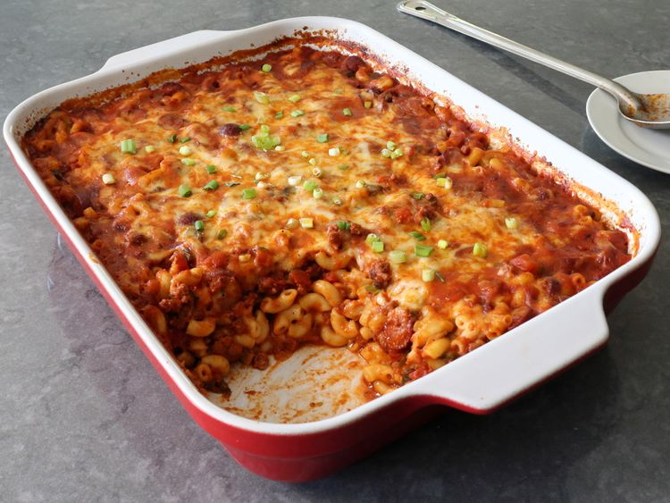

Chili Dog Mac and Cheese

Description
This recipe will make a delicious Chili Dog Mac and Cheese that you are sure to love.
Ingredients
- 1 tablespoon olive oil
- 1 pound ground beef
- 1 large onion, diced
- 2 generous teaspoons kosher salt, plus more to taste
- 3 tablespoons chili powder
- 2 teaspoons ground cumin
- 1 teaspoon smoked paprika
- 1/2 teaspoon freshly ground black pepper
- 1/8 teaspoon ground cinnamon
- 1/8 teaspoon cayenne pepper, or to taste
- 1/2 teaspoon dried oregano, preferably Mexican oregano
- 4 cloves garlic, minced
- 1 cup diced green peppers
- 1 pound hot dogs, sliced
- 1 (28 ounce) can crushed tomatoes (or 3 1/2 cups tomato sauce or puree)
- 2 1/2 cup water
- 2 rounded cups elbow macaroni
- 8 ounches shredded white Cheddar cheese
- 8 ounches shredded Monterey Jack cheese
- green onions, sliced, for the top (optional)